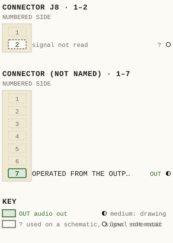
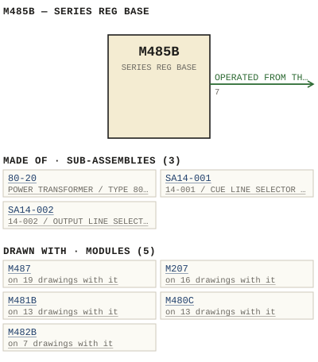

M485B — SERIES REG BASE
| Type | module |
| Category | POWER |
| Try it | simulator & front panel · download package (zip) |
| Earliest dated evidence | 1978|11 — title-block date |
| Evidence | "REVISION 6/78" in PUBLIC/Manuals + tech DOCUMENTS/Modules/M485B 25V power Supply/M485B - P12 - Regulator Layout.jpg |
| Confidence | high |
| All years found | 1978|11, 1982|15 |
| Variants | M485 |
| Folder | DOCUMENTS/Done/Done - L1202A Console |
| Folder | DOCUMENTS/RECENT SCANS/WBSps.ca 20210320 - Scans |
| Folder | Modules/AMPLIFIERS/M481B |
Connections
What it is made of and what it is part of.
Pictures


M485B.pinout.svg

M485B.connections.svg 1978 - M485B - 1-117-06-001 - REGULATOR BOARD COMPONENT LAYOUT.jpg
1978 - M485B - 1-117-06-001 - REGULATOR BOARD COMPONENT LAYOUT.jpg 1982 - M485B - P01 - TOC.jpg
1982 - M485B - P01 - TOC.jpg M485B - P01 - TOC(1).jpg
M485B - P01 - TOC(1).jpg M485B - P01 - TOC.jpg
M485B - P01 - TOC.jpg 1978 - M485B - 1-117-02-001 - CIRCUIT ADDED.jpg
1978 - M485B - 1-117-02-001 - CIRCUIT ADDED.jpg 1978 - M485B - 1-117-06-001 - ADOEO KTI.jpg
1978 - M485B - 1-117-06-001 - ADOEO KTI.jpg 1978 - M485B - 485-02-003 - POWER SUPPLY SCHEMATIC.jpg
1978 - M485B - 485-02-003 - POWER SUPPLY SCHEMATIC.jpg 1978 - M485B - B 485-01-001 - M485B - +-25V POWER SUPPLY - FUNCTIONAL DIAGRAM.jpg
1978 - M485B - B 485-01-001 - M485B - +-25V POWER SUPPLY - FUNCTIONAL DIAGRAM.jpg 1978 - M485B - B 485-02-003 - M485B - +-25V POWER SUPPLY - SCHEMATIC.jpg
1978 - M485B - B 485-02-003 - M485B - +-25V POWER SUPPLY - SCHEMATIC.jpg 1978 - M485B - DIF ADJ OVER VOLTAGE DETECTOR.jpg
1978 - M485B - DIF ADJ OVER VOLTAGE DETECTOR.jpg 1978 - M485B - P02 - 1-1.jpg
1978 - M485B - P02 - 1-1.jpg 1978 - M485B - P03 - 2-1.jpg
1978 - M485B - P03 - 2-1.jpg 1978 - M485B - P04 - 3-1.jpg
1978 - M485B - P04 - 3-1.jpg 1978 - M485B - P05 - 1-117-1-1.jpg
1978 - M485B - P05 - 1-117-1-1.jpg 1978 - M485B - P06 - 1-117-1-2.jpg
1978 - M485B - P06 - 1-117-1-2.jpg 1978 - M485B - P07 - 1-117-2-1.jpg
1978 - M485B - P07 - 1-117-2-1.jpg 1978 - M485B - P08 - 1-117-2-2.jpg
1978 - M485B - P08 - 1-117-2-2.jpg 1978 - M485B - P09 - 1-117-2-3.jpg
1978 - M485B - P09 - 1-117-2-3.jpg 1978 - M485B - SERIES REG BASE.jpg
1978 - M485B - SERIES REG BASE.jpg 1980 - 485-01-001 - +-25V POWER SUPPLY FUNCTIONAL DIAGRAM - DRN P. MAHONEY - ENG MRW - ISS 1 (2).jpg
1980 - 485-01-001 - +-25V POWER SUPPLY FUNCTIONAL DIAGRAM - DRN P. MAHONEY - ENG MRW - ISS 1 (2).jpg 1980 - 485-02-003 - +-25V POWER SUPPLY SCHEMATIC - DRN P. MAHONEY - ENG MRW - ISS 1 (2).jpg
1980 - 485-02-003 - +-25V POWER SUPPLY SCHEMATIC - DRN P. MAHONEY - ENG MRW - ISS 1 (2).jpg 1980 - 485-02-003 - ±25V POWER SUPPLY SCHEMATIC - DRN P. Mahoney - ENG MRW - ISS 1.jpg
1980 - 485-02-003 - ±25V POWER SUPPLY SCHEMATIC - DRN P. Mahoney - ENG MRW - ISS 1.jpg 1982 - 1-117-02-001 - 1-117 REGULATOR BOARD SCHEMATIC - DRN MRW - ENG MRW - ISS 8.jpg
1982 - 1-117-02-001 - 1-117 REGULATOR BOARD SCHEMATIC - DRN MRW - ENG MRW - ISS 8.jpg 19xx - DOC - 1202-02-017 - POSTS CHASSIS GROUND.jpg
19xx - DOC - 1202-02-017 - POSTS CHASSIS GROUND.jpg 19xx - DOC - 1202-04-007 - OSCILLATOR CUE-SOLO RE-ENTRY AND AUX LEVEL SCHEMATIC.jpg
19xx - DOC - 1202-04-007 - OSCILLATOR CUE-SOLO RE-ENTRY AND AUX LEVEL SCHEMATIC.jpg 19xx - DOC - L1202A - P13 - 11-1.jpg
19xx - DOC - L1202A - P13 - 11-1.jpg 19xx - DOC - L1202A - P25 - IV-1.jpg
19xx - DOC - L1202A - P25 - IV-1.jpg 19xx - DOC - 485-02-003 - POWER SUPPLY SCHEMATIC.jpg
19xx - DOC - 485-02-003 - POWER SUPPLY SCHEMATIC.jpg M485B - P10 - Functional Diagram.jpg
M485B - P10 - Functional Diagram.jpg M485B - P11 - Schematic.jpg
M485B - P11 - Schematic.jpg L1202A - P04(1).jpg
L1202A - P04(1).jpg 1978 - M625A - P011 - 1-117-1-2.jpg
1978 - M625A - P011 - 1-117-1-2.jpg 1982 - 1202-02-011 - INPUT CHANNEL SCHEMATIC - DRN JP - ENG MRW - ISS 1.jpg
1982 - 1202-02-011 - INPUT CHANNEL SCHEMATIC - DRN JP - ENG MRW - ISS 1.jpg 1982 - 1202-02-017 - POWER DISTRIBUTION SCHEMATIC - DRN JP - ENG MRW - ISS 1.jpg
1982 - 1202-02-017 - POWER DISTRIBUTION SCHEMATIC - DRN JP - ENG MRW - ISS 1.jpg 1980 - 485-01-001 - +-25V POWER SUPPLY FUNCTIONAL DIAGRAM - DRN P. MAHONEY - ENG MRW - ISS 1.jpg
1980 - 485-01-001 - +-25V POWER SUPPLY FUNCTIONAL DIAGRAM - DRN P. MAHONEY - ENG MRW - ISS 1.jpg 1980 - 485-02-003 - +-25V POWER SUPPLY SCHEMATIC - DRN P. MAHONEY - ENG MRW - ISS 1.jpg
1980 - 485-02-003 - +-25V POWER SUPPLY SCHEMATIC - DRN P. MAHONEY - ENG MRW - ISS 1.jpgPrice history
| Year | Kind | Price | Listed as | Effective | Source |
|---|---|---|---|---|---|
| 2005|38 | used market value | 100.00 | M485B 25V power Supply | wbsps - website ARCHIVE/WBSPS 2008/ARCHIVE/old website/PriceGuide.htm | |
| 2006|39 | used market value | 100.00 | M485B 25V power Supply | wbsps - website ARCHIVE/WBSPS 2008/ARCHIVE/jan 2006 shell/priceguide.htm |
Pinout & connections
Each contact as its own documents name it: 1 named (1 medium confidence). An empty slot is a contact no page names. Hover a contact for its source; the table under the drawing lists them.
pinout (SVG) · connections (SVG) · pins (JSON)
Pin evidence — 2 contacts
| Pin | Signal | Kind | Confidence | Read from | Source |
|---|---|---|---|---|---|
| 7 | OPERATED FROM THE OUTPUT OF 22 also: OPERATED FROM THE OUT… (prose) | audio out | medium | prose | 1982 - M485B - 25V power Supply.pdf, p. 5 “R18 Serves as differential control valtage while decreasing the other Adjusting Ria wil| increase one Booster transistors 04 and 05 are ope…” |
| J8-2 | — | used on a schematic, signal not read | low | schematic | 1978 - M485B - 1-117-06-001 - ADOEO KTI.jpg, p. 1 “# 8 9 # 0 1 1 8 1 { 1 F 1 J 8 :2 8 8 8 0 2 3 8 8 1 8 2 2 b 0 F 1 1 1 8 8 2 JAHF F 8e 1 I: 8 500 0 1 8 Prs1 8 1 0 8 2 2 8 8 { 1 2 I8 2 8 8 1…” |
Dates found in the documents
| Year | Kind | Text | File |
|---|---|---|---|
| 1978|11 | title-block date | REVISION 6/78 |
1978 - M485B - 1-117-06-001 - REGULATOR BOARD COMPONENT LAYOUT.jpg |
| 1982|15 | manual issue date | MANUAL ISSUE#2 DECEMBER 1982 |
1982 - M485B - 25V power Supply.pdf |
| 1982|15 | manual issue date | MANUAL ISSUE #2 DECEMBER 1982 |
1982 - M485B - P01 - TOC.jpg |
| 1982|15 | manual issue date | MANUAL ISSUE #2 DECEMBER 1982 |
M485B - P01 - TOC(1).jpg |
| 1982|15 | title-block date | ISSUE DECEMBER 1982 |
M485B - P01 - TOC.jpg |
Physical manual inventory
| Item | Location | Status | Scanned |
|---|---|---|---|
| 25V POWER SUPPLY | WBS 001 | DUPLICATE | |
| M485B 25V power Supply | PDF - Already scanned |
Documents (2)
| Year | File | |
|---|---|---|
| 1978|11 | 1978 - M485B - 25V power Supply.pdf | note |
| 1982|15 | 1982 - M485B - 25V power Supply.pdf | note |
Photos & scans (46)


Sub-assemblies & parts used (3)
| Item | What | Family | Year | How we know |
|---|---|---|---|---|
| 80-20 | POWER TRANSFORMER / TYPE 80-20 | Power transformers (80-n) | 1977|10 | named in its manual |
| SA14-001 | 14-001 / CUE LINE SELECTOR / SCHEMATIC | Circuit boards (SA14-nnn) | 1980|13 | named in its manual |
| SA14-002 | 14-002 / OUTPUT LINE SELECTOR / SCHEMATIC | Circuit boards (SA14-nnn) | 1980|13 | named in its manual |
Parts list — board M485B (34 parts)
From 1982 - M485B - 25V power Supply.pdf, page 4 (scanned); also in timelines/data/bom.csv.
| Ref | Part | Value | Manufacturer | Mfr part no. |
|---|---|---|---|---|
| C1 | Capacitor' uF/75 V Callins | 4100 | 19-85-CES-4ioo-75-| | |
| R2 | ohm 107 6.5W | 0.47 | ||
| C3 | uF/35 V Kemet | T390B105MO35AS | ||
| C5 | pF Aselco | 1500 | c492 MC-152m | |
| C6 | uf/40 V Philips | 100 | 426ETGI00 | |
| C9 | delete | |||
| C10 | uF Aselco | 0.015 | ca92-MC-153M | |
| C11 | uF/25 V Philips | 22 | 426ETF22 | |
| CR3 | Zener I.R | 1N5366A | ||
| CR6 | Zener | IN475IA | ||
| R12 | IKS | |||
| R14 | Tcim pot Piher PT 10h (2.5) | 500 | ||
| R15 | Resistor 1/4w 15K Philips | 57 | ||
| R18 | Trim pot sk Piher PT 1Oh (2.5) Sk | |||
| R19 | Resistor 300 Dale | 3.75w | Cw-2B | |
| R20 | Resistor 1/4w 2K7 Philips | 5% | ||
| R22 | Resistor 75 Dale | 3.75w | Cw-2B | |
| R23 | Resistor 1/4w 330 Philips | 596 | ||
| R27 | Philips | 10K | ||
| R28 | Triti pot Piher PT 1Ov (2.5) | 500 | ||
| R29 | Resistor 1/4w 10K Philips | 5% | ||
| R3I | Trim pot Piher PT 1Ov (2.5) | 20k | ||
| R32 | Resistor 1/4w 24k Philips | 57 | ||
| R33 | Trim pot Sk Piher PT 1Ov (2.5) | 5k | ||
| R35 | Resistor 1/4w 5%6 Philips | 24k | ||
| R36 | Resistor 1/4w delete | 59 | ||
| R37 | delele | |||
| R3B | Philips | 91K | ||
| R39 | Trim pot Piher PT TOv (2.5) | 20k | ||
| R40 | Resistor 1/4w 100 Philips | 5% | ||
| R43 | delete | |||
| R44 | delete | |||
| R45 | Ik Philips | |||
| Z1 | Integrated circuit National | LM3OSAH |
Named in other drawings & documents (5)
From the manuals
Each manual split into its sections. Text that is the same in many Ward-Beck manuals (warranty, address, standard notes) is kept once on the Boilerplate page and linked.
General description (2)
Description — 517 words · 1982 - M485B - 25V power Supply.pdf, page 3
M4858 +/ 25 POWER SUPPLY The M485B is +/ - 25 vol[ dc power supply which is capable of del i vering currents of up t0 amperes. The primary winding of the power transformer T1 is designed for operation from nominal 110/220 volt ac, 50/60 Hz Tine. The secondary of Ti feeds bridge rectifier CRI-CRL and filter cap- acitors C1 C2, developing unregulated dc vollages of +/-40 volts. These dc voltages feed sfries regulator transistors 01 and 02 . The reference ampli fiers and regulator driver circuitry Jocaled On the 1-117 regulator card derives its power fromi the +/-40 volts as well . The regulated +/-25 volts appears on respectively _ TB2 terminals 1,2 and 7,8 Clamping diodes CRS-CR8 prevent any supply voltage reversals from damaging the regulator circuitry. 21
WAAD-BECK Systems LTD; PARTS List M/858 25 POWER SUPPLY PART
1-117 REGULATOR BOARD The 1-117 Regulator is printed circuit board unil. It is used in number of WBS Power Supplies and contains the majority of the active circuitry of these units. The +25 regulator consists of 21 and booster transistor 01 _ 21 contains internal current imiting and foldback circuits. The voltage drop developed across the current sensing resistor R3 on the main chassis i5 fed t0 pin of 21 via the voltage divider R7/R8 . When the supply current reaches approximately 2.5 amperes; foldback current limiting sels in With the supply output shorted, the current is imited to approximately 0.75 amperes Feedback sensing of the +25 i5 brought back frot the main framc via PCB connector pin 6 , and is coupled to pin of 21 via thc voltage divider consisting of R1? RIB and R15 The output of 21 controls the basc current of 01 In turn, 01 drives the positive series regulator 01 On the main frame by way of edge connector pin 21 The -25 V regulator consists of 22 and transistors 04 through 06 . The negative side of R15 is connected t0 22, pin By varying R14, the negative output voltage is con trolled Simultareously , via 22 , Pin and the voltage divider R17 , R18 and R15, the positive output voltage will respond proportionally to the operation of R14 Thus, both positive and negative voltages wi track . R18 Serves as differential control valtage while decreasing the other Adjusting Ria wil| increase one Booster transistors 04 and 05 are operated from the output of 22 (pin 7) and in [Urn drive the negativc Series regulator 02 On the main frame via pin of the edge connector. Transistor 06 is operaled by the voltage developed across the current sensing resistor Rh (on the main frame) As the current rises to predetermined value, 06 will conduct and reduce the drive current from 22, pin 02 wili sense the loss of either output voltage. Normally 02 is saturaled, resulting in 03 being switched off_ In the event of failurc of either supply voltage, 02 wil become nonconductive and 03 will saturate, thereby remov ing the reference currents from Z1 and 22, causing both regulators to shut down 1-117-1-1
WAAD-BECK systems LTD; cIRcuiT
- source: 1982 - M485B - 25V power Supply.pdf, p. 3
Description — 110 words · 1978 - M485B - P03 - 2-1.jpg, page 1
M485p +/ POWERSUPPLX The M485B +/ - delivering currents up vol dc power supply which amperes capable The primary winding the power transformer operation from nominal 110/220 vol - ac, 50/60 Hz Iine designed for The secondary Teeds bridge rectifier CRI-CRL and filter cap- acitors C2 , developing unregulated ac voltages /-40 volts These dc voltages feed series regulator transistors and 02 The reference amplifiers and regulator driver circuitry located (n the 1-117 regulator card derives its power from the +/-40 volts as well.
The regulaled +/-25 volts appears respective TB2 terminals 1,2 and 7 , 8 Clamping diodes CRS-CR8 prevent any supply voltage reversals from damaging the regulator circuitry
- source: 1978 - M485B - P03 - 2-1.jpg, p. 1
Specifications (1)
Technical Data — 149 words · 1982 - M485B - 25V power Supply.pdf, page 2
M485B +/- 25 POWER SUPPLY DC Output: 1/ - 25 volts at load currents frorri amperes. to Line Regulation: 0 .1% for Iine variations from 105 Ta 125 Or from 210 to 250 volts ac respectively Load Regulation: 0 .1% for load varations From zero [0 full load Ripple and Noise: Less than 500 microvolts RMS for all Iine and load conditions specified above. Internal Impedance: Less than 0 . ohm fromi dc Ta 20 kHz Stability: 0.1 volts measured over an after 30 minutes warmiup hour period, Protection: Overcurrent and short circuit foldback. Overvoltage crowbar AC Input: 110/220 volts aC, nominal 50/60 Hz . Maximum input Power: 525 VA. Ambient Temperature: t0 40 degrees Celsius at rated output. Dimensions: 13.5" wide 6.2" high 4.0" deep (340 mm 156 MM 100 mm ) Weight 12 Lbs (5.5 kg) Accessories: Power cord, AC Fuse and switch.
WAAD-BECK systems LtD_ ciRcuiT
- source: 1982 - M485B - 25V power Supply.pdf, p. 2
Drawings (24)
Each scan with its trace laid over it: the slider runs from the scan to the vector drawing. Click one to see it large and save it as SVG, DXF, KiCad, PDF or PowerPoint.
1978 - M485B - B 485-01-001 - M485B - +-25V POWER SUPPLY - FUNCTIONAL DIAGRAMviewer
M485B / +-25V POWER SUPPLY / FUNCTIONAL DIAGRAMviewer
M485B / +-25V POWER SUPPLY / FUNCTIONAL DIAGRAMviewer
Circuit Addedviewer
Power Supply Schematicviewer
1978 - M485B - B 485-02-003 - M485B - +-25V POWER SUPPLY - SCHEMATICviewer
M485B / +-25V POWER SUPPLY / SCHEMATICviewer
M485B / +-25V POWER SUPPLY / SCHEMATICviewer
M485B / ±25V POWER SUPPLY / SCHEMATICviewer
1-117 / REGULATOR BOARD / SCHEMATICviewer
Posts Chassis Groundviewer
Power Supply Schematicviewer
Adoeo Ktiviewer
Regulator Board Component Layoutviewer
Oscillator Cue/Solo Re-Entry And Aux Level Schematicviewer
Dif Adj Over Voltage Detectorviewer
Series Reg Baseviewer
M485B - P10 - Functional Diagramviewer
M485B - P11 - Schematicviewer
Read from the drawing title blocks.
| Drawing | Title | Date | Drawn by | Checked by | Iss. | Source |
|---|---|---|---|---|---|---|
| B 485-01-001 | M485B / +-25V POWER SUPPLY / FUNCTIONAL DIAGRAM | 1980|13 | P MAHONEY | 1 | file | |
| B 485-01-001 | M485B / +-25V POWER SUPPLY / FUNCTIONAL DIAGRAM | 1980|13 | P MAHONEY | 1 | file | |
| B 485-02-003 | M485B / +-25V POWER SUPPLY / SCHEMATIC | 1980|13 | P MAHONEY | R KELLE | 1 | file |
| B 485-02-003 | M485B / +-25V POWER SUPPLY / SCHEMATIC | 1980|13 | P MAHONEY | 1 | file | |
| B 485-02-003 | M485B / ±25V POWER SUPPLY / SCHEMATIC | 1980|13 | P MAHONEY | 1 | file | |
| B 1-117-02-001 | 1-117 / REGULATOR BOARD / SCHEMATIC | 1982|15 | MRW | RM | 8 | file |
| — | Power Supply | JJ | B | file p.10 | ||
| — | Dif Adj Over Voltage Detector | P MAHONEY | file p.10 | |||
| — | Circuit Addedi | MRW | RM | 1 | file p.13 | |
| — | Dif Adj Over Voltage Detector | P MAHONEY | file | |||
| — | Series Reg Base | MRW | RC | 1 | file | |
| — | file | |||||
| — | file | |||||
| — | file | |||||
| — | file | |||||
| 1-117-02-001 | Circuit Added | MRW | RM | file | ||
| 1-117-06-001 | Adoeo Kti | L ISSUE | 3 | file | ||
| 1-117-06-001 | Adoeo Re- Drawn Revision | 1 | file p.12 | |||
| 1-117-06-001 | Regulator Board Component Layout | 1 | file | |||
| 1202-02-017 | Posts Chassis Ground | file | ||||
| 1202-04-007 | Oscillator Cue/Solo Re-Entry And Aux Level Schematic | file | ||||
| 485-02-003 | Power Supply Schematic | file p.11 | ||||
| 485-02-003 | Power Supply Schematic | file | ||||
| 485-02-003 | Power Supply Schematic | file |